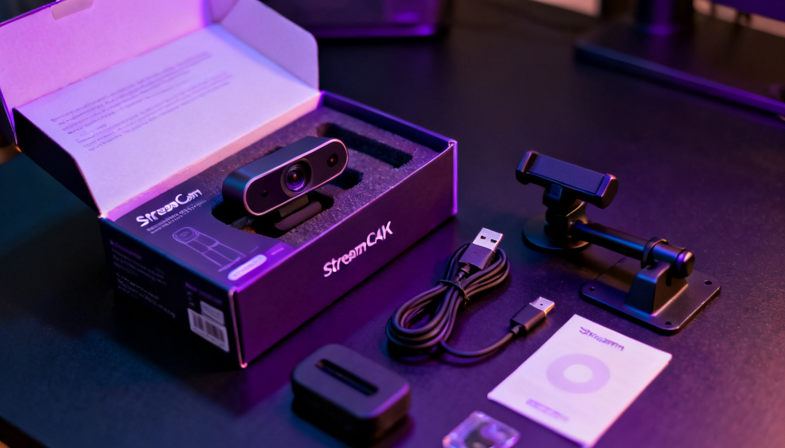
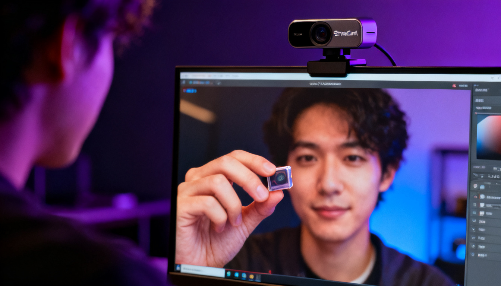

4K-веб-камеры становятся всё доступнее, но нужны ли они обычному стримеру? Сегодня тестируем Beamline StreamCam 4K — камеру среднего ценового сегмента, которая обещает кристально чистое изображение и продвинутую автофокусировку. Разбираемся, кому стоит её купить, а кому хватит и Full HD.
📑 Содержание
Технические характеристики
| Параметр | Значение |
|---|---|
| Максимальное разрешение | 3840×2160 (4K) @ 30 fps |
| Full HD режим | 1920×1080 @ 60 fps |
| Матрица | CMOS 1/2.5", 8.5 Мп |
| Автофокус | Фазовый, 0.2 сек |
| Угол обзора | 78° (с возможностью цифрового зума) |
| Подключение | USB 3.0 Type-C |
| Микрофон | Два всенаправленных с шумоподавлением |
| Крепление | На монитор + резьба 1/4" для штатива |
| Цена на момент обзора | 29 990 ₽ |
Комплектация и дизайн
Что в коробке?
Камера поставляется в стильной чёрной коробке с магнитной застёжкой. Внутри:
- Сама камера StreamCam 4K
- USB-C на USB-A кабель (2 метра)
- Съёмное крепление на монитор
- Переходник на штатив 1/4"
- Краткая инструкция и гарантийный талон
Корпус выполнен из матового пластика с металлической передней панелью. Выглядит дорого и минималистично. Светодиодный индикатор работы ненавязчивый. Крепление надёжно фиксируется на мониторах толщиной до 5 см, а при желании камеру можно поставить на штатив.

Качество изображения
Основное, ради чего покупают эту камеру — картинка. В 4K при хорошем освещении детализация поражает: видны мельчайшие текстуры одежды, волосы, даже поры на коже. Цветопередача естественная, без ухода в холодные или тёплые тона. При слабом свете включается автоматическая коррекция, которая поднимает экспозицию, но появляются шумы — впрочем, как и у любой веб-камеры.
В режиме 1080p 60 fps картинка остаётся чёткой, а плавность движений идеально подходит для динамичных стримов.
| Условия освещения | Оценка качества |
|---|---|
| Яркий дневной свет | ★★★★★ — идеально |
| Искусственное освещение (LED-панели) | ★★★★½ — отлично |
| Слабое освещение (одна лампа) | ★★★☆☆ — приемлемо, но шумновато |
| Полная темнота (только свет монитора) | ★★☆☆☆ — шумно, лучше добавить свет |
💡 Совет по освещению
Даже с топовой камерой плохой свет испортит картинку. Рекомендуем использовать хотя бы одну кольцевую лампу или LED-панель — разница будет колоссальной.
Автофокус и 4K: главные фишки
Фазовый автофокус
StreamCam 4K использует фазовый автофокус (PDAF), как в современных смартфонах. Он моментально наводится на лицо и не «дышит» (не перефокусируется туда-сюда). Если вы часто двигаетесь или показываете предметы в кадре, автофокус не подведёт.
4K при 30 fps — идеально для записи видео, проведения презентаций, кулинарных стримов, где важна каждая деталь. Для игровых стримов лучше переключиться в 1080p 60 fps — плавность важнее сверхчёткости.

Программное обеспечение и настройки
Beamline предлагает фирменную утилиту Beamline Camera Hub (Windows/macOS). В ней можно:
- Регулировать яркость, контраст, насыщенность, резкость.
- Включать/выключать автофокус и HDR (в 1080p).
- Настраивать угол обзора (цифровой зум).
- Обновлять прошивку камеры.
Все настройки сохраняются в памяти камеры и работают в любых приложениях (OBS, Zoom, Discord).
Вердикт: стоит ли покупать StreamCam 4K?
Кому подойдёт:
- Профессиональным стримерам, которые хотят максимальное качество картинки.
- Видеоблогерам, записывающим ролики на камеру.
- Тем, кто проводит презентации или обучающие вебинары с демонстрацией мелких деталей.
- Пользователям с хорошим освещением и современным ПК (USB 3.0 обязателен).
Кому можно сэкономить:
- Начинающим стримерам — разница между хорошей 1080p камерой за 10 000 ₽ и этой будет не так заметна при плохом свете.
- Если вы стримите в 720p или 1080p 30 fps — камера избыточна.
- Если у вас слабый ПК или нет USB 3.0 — 4K поток может тормозить.
🎥 «StreamCam 4K — одна из лучших веб-камер на рынке, но её потенциал раскрывается только при хорошем освещении и мощном компьютере. Если вы готовы — берите, не пожалеете».